DaFT Lead and Effigy Proposal
Submitter: Seph Reed (legal: Scott Jaromin)
Phone: 737-529-5031
Email: ShadyWillowCreek@gmail.com
Inspiration and Project Summary:
The project I am proposing is called the "Playwood Palace". It is a giant rainbow palace, made to loosely resemble a unicorn. It is inspired by wood castle playgrounds, in particular, the one from my home town of Healdsburg called Giorgi Park. It has since been replaced by plastic and metal style playground, but it once was one of the coolest builds I'd even seen.
Only picture I could find of my childhood park
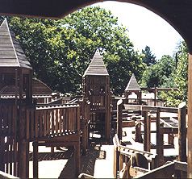
The build is designed with all considerations in mind:
- It's safe, deincentivises climbing in unsafe areas while incentivising ladders, and has sturdy design.
- It will burn well, with most of the budget going to 2x4x8 boards, the cheapest wood per pound, and arranged in such a way that it's well airated while still dense.
- It uses very little non-wood material. Screws, joist hangers, perhaps some mylar. The burn will be non-toxic.
- It is sized to fit in the warehouse.
- It is designed for flat packing, and uses the same basic components over and over for simple parallel design.
Beyond these considerations are the fun parts:
- Ladders
- Towers
- Rainbow lighting
- Mirror Maze
- Secret Door
- Slide
- Wood couches for chillin
- Spiny Wheel of Death (mac osx) Unicorn Eyes that spin
- Ball Pit? (depending on budget)
- Flame Effects? (depending on budget and whim of Tim)
- Calming harp background sounds
- Plenty of palace banner flag area for theme camps.
Project Management Summary:
The process will be divided up mostly into creating the major components, 2 types of beams, and 4 types of decking. These are repeated over and over for the entire build. The leaders will be Me, Misty Nickle, and whichever Daftees feel like taking a teaching position. It should be pretty straight forward, there will be detailed designs for each of the components and a count. Almost all cuts are from 8 feet to 4. Very simple.
Project Plan/Schedule:
First we'll do the wood couches, for fun. Then we'll begin on the beams of the bottom floor. The decking and railing will be finished before repeating the process on the second floor. Once all beams, decking, and railings are complete, we'll begin making the walls. There a few small projects that need to happen concurrently, a staircase, some ladders, tower points, unicorn eyes, and the slide. Once the build is complete, we'll take all the walls off, all the deck chunks out, and beams down to be staged. They should all flat pack and nest well.
The timing on everything is hard to estimate, but with so few cuts, and everything so repeated, it's within bounds. How far within could range from us being done really early, to a few all nighters. This is my first time doing something like this and I don't know the ratio yet of my time in 3d modeling vs. what it takes in reality for x amount of hands. That being said, it's less work than I've seen done before in Daft, by a considerable margin.
Safety: I have had training in project management of teenagers far out in the woods doing trail maintanance, and learned a good eye for safety. For the most part, no drinking and using table saws, put up railings early, be clever not risky.
Transportation: Transportation will be more a matter of hands than trucks. The design is made to flat pack, so space should be okay. But it is also designed out of lots and lots of boards, which means it will be lots of moving weight, so many hands.
Burn: "It will burn well, with most of the budget going to 2x4x8 boards, the cheapest wood per pound, and arranged in such a way that it's well airated while still dense."
Non-Burn: We'll already have experience taking it apart. Storage of it is an unknown beyond there.
Cleanup: All ash and steel.
Budget: The budget is still in the works, but so far, here is what I have added up so far. It is still missing things, and will likely hit near the $10,000 cap:
Computed Totals
Computed Item Counts
Graphics:
Overall design. Notices Eyes and Horn. Imagine Rainbows
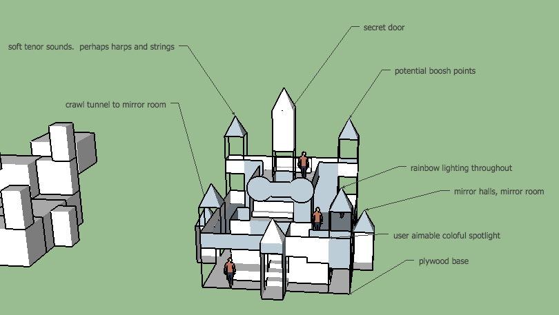
Freestanding Modules
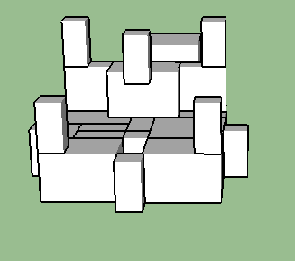
Board by Board Design (to date Nov 20 2016)
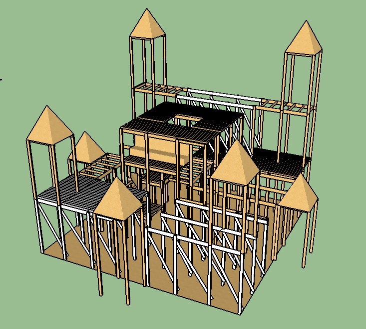
The Boards With Color
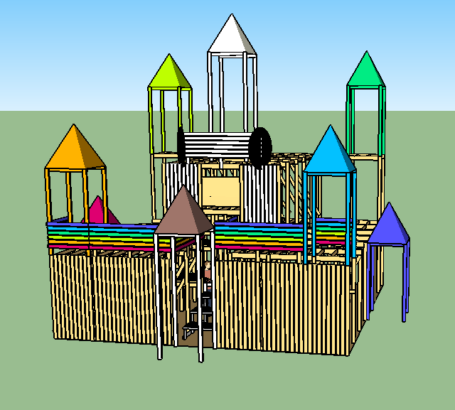
Frontsize of design (xray)
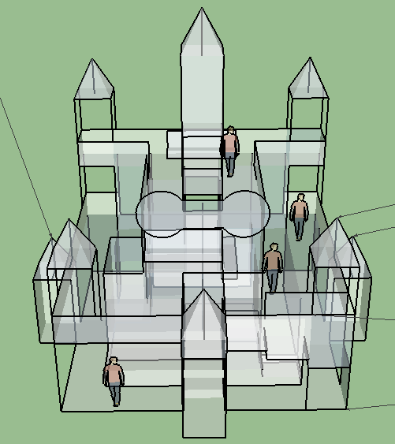
Rightside of design
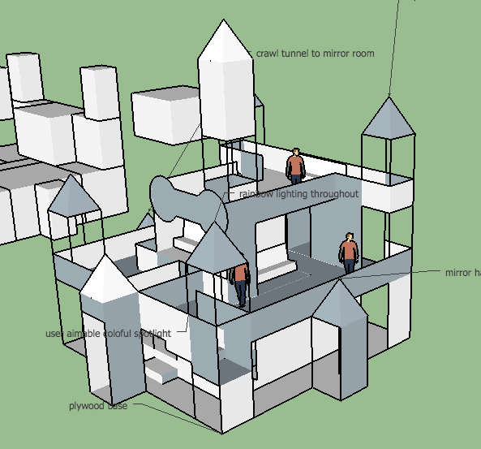
Rightside of design (low)
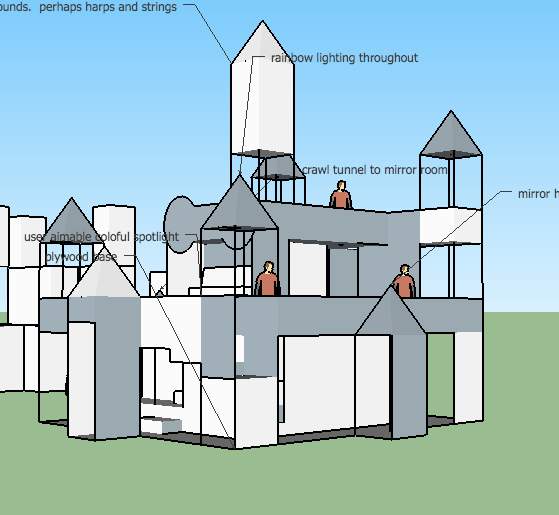
Leftside of design
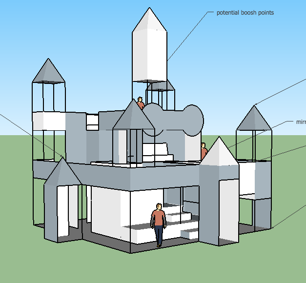
Backside of design
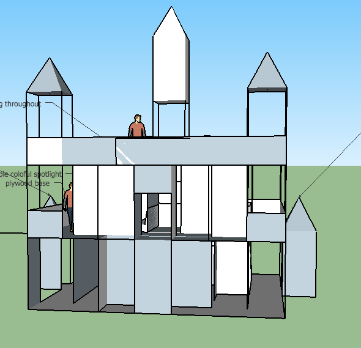
Backside of design (xray)
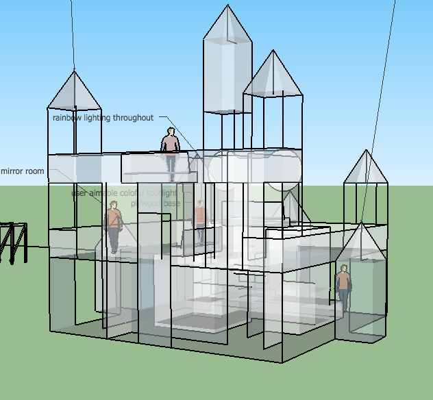
With Color
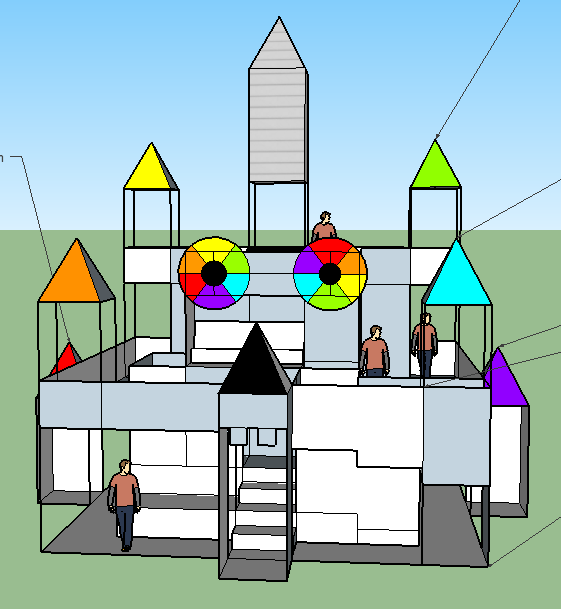